#!mamba env create -f '../../environment.yml'
#!mamba env update -f '../../environment.yml' --prune
Testing examples from remote_sensing#
# this block is for developing the module, comment out when using the module, and uncomment import easysnowdata
%load_ext autoreload
%autoreload 2
%aimport easysnowdata
#import easysnowdata
import geopandas as gpd
import rioxarray as rxr
import xarray as xr
import shapely
import dask
import pystac_client
import planetary_computer
import odc.stac
import matplotlib.pyplot as plt
import matplotlib.colors
import datetime
import pandas as pd
import numpy as np
import contextily as ctx
import rasterio as rio
import datetime
today = datetime.datetime.now().strftime("%Y-%m-%d")
bbox_gdf = gpd.read_file(
"https://github.com/egagli/easysnowdata/raw/main/docs/examples/mt_rainier.geojson"
)
Copernicus Global Land Service forest cover fraction#
forest_cover_fraction_da = easysnowdata.remote_sensing.get_forest_cover_fraction(bbox_gdf)
#forest_cover_fraction_da
f,ax = forest_cover_fraction_da.attrs['example_plot'](forest_cover_fraction_da)
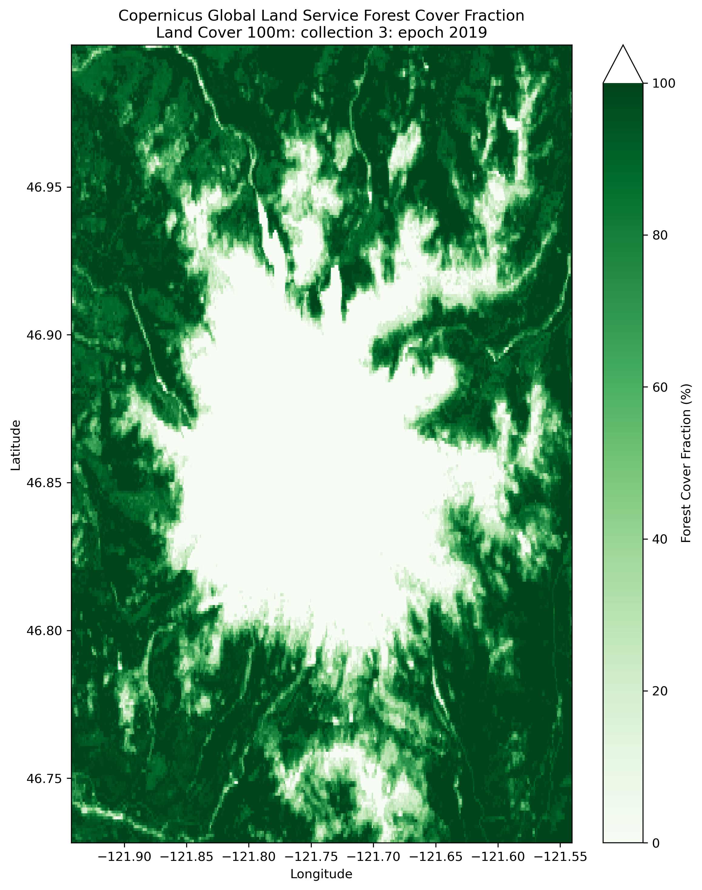
Sturm & Liston 2021 seasonal snow classification#
snow_classification_da = easysnowdata.remote_sensing.get_seasonal_snow_classification(bbox_gdf)
#snow_classification_da
f,ax = snow_classification_da.attrs['example_plot'](snow_classification_da)
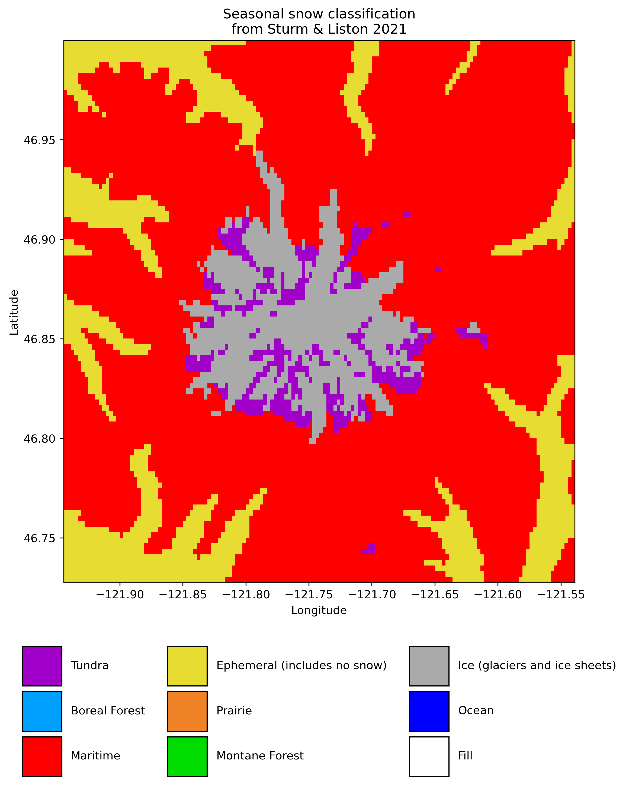
#
Wrzesien et al 2019 global seasonal mountain snow mask#
mountain_snow_da = easysnowdata.remote_sensing.get_seasonal_mountain_snow_mask(bbox_gdf)
#mountain_snow_da
This function takes a moment, getting zipped file from zenodo...
f, ax = mountain_snow_da.attrs['example_plot'](mountain_snow_da)
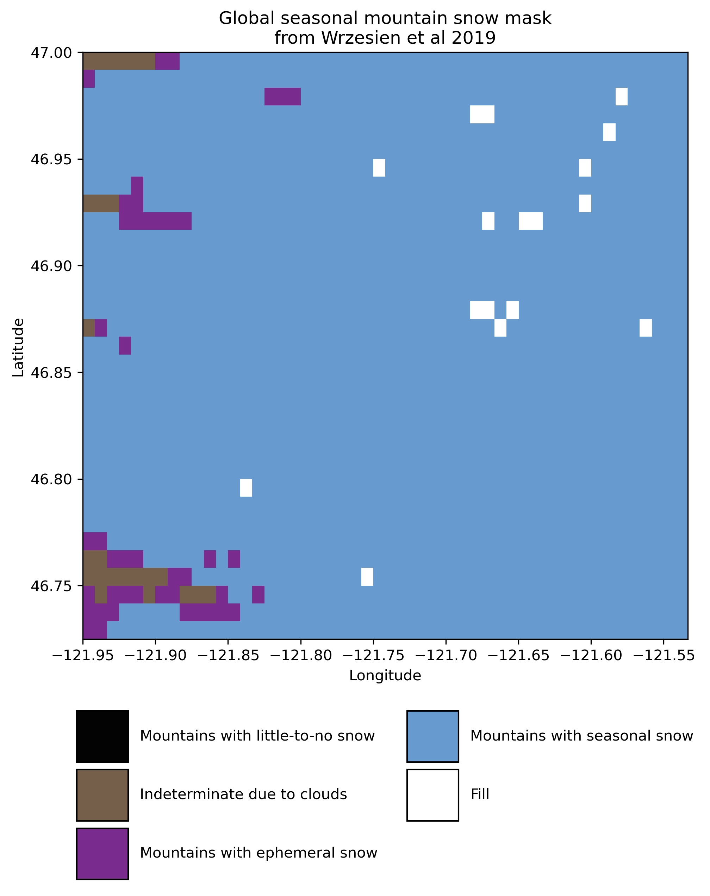
ESA WorldCover#
worldcover_da = easysnowdata.remote_sensing.get_esa_worldcover(bbox_gdf)
#worldcover_da
f, ax = worldcover_da.attrs['example_plot'](worldcover_da)
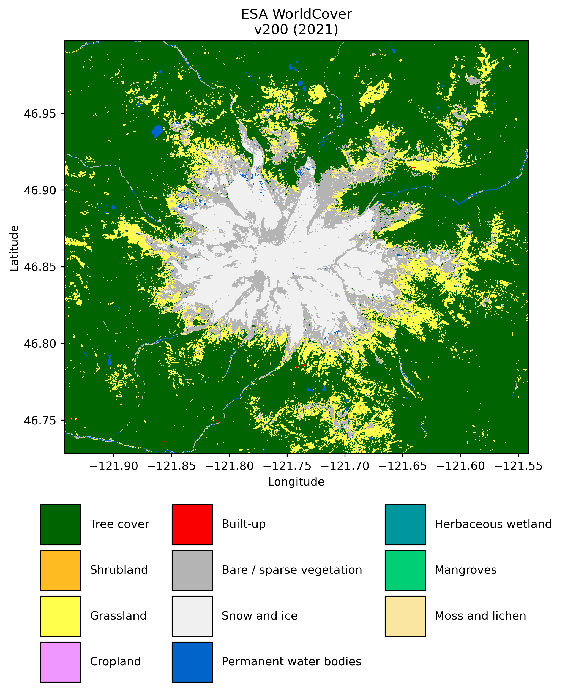
NLCD Landcover 2021#
nlcd_landcover_da = easysnowdata.remote_sensing.get_nlcd_landcover(bbox_gdf, layer='landcover')
#nlcd_landcover_da
nlcd_landcover_da.attrs['example_plot'](nlcd_landcover_da)
(<Figure size 2400x3000 with 1 Axes>,
<Axes: title={'center': 'NLCD Landcover (2021)'}, xlabel='x', ylabel='y'>)
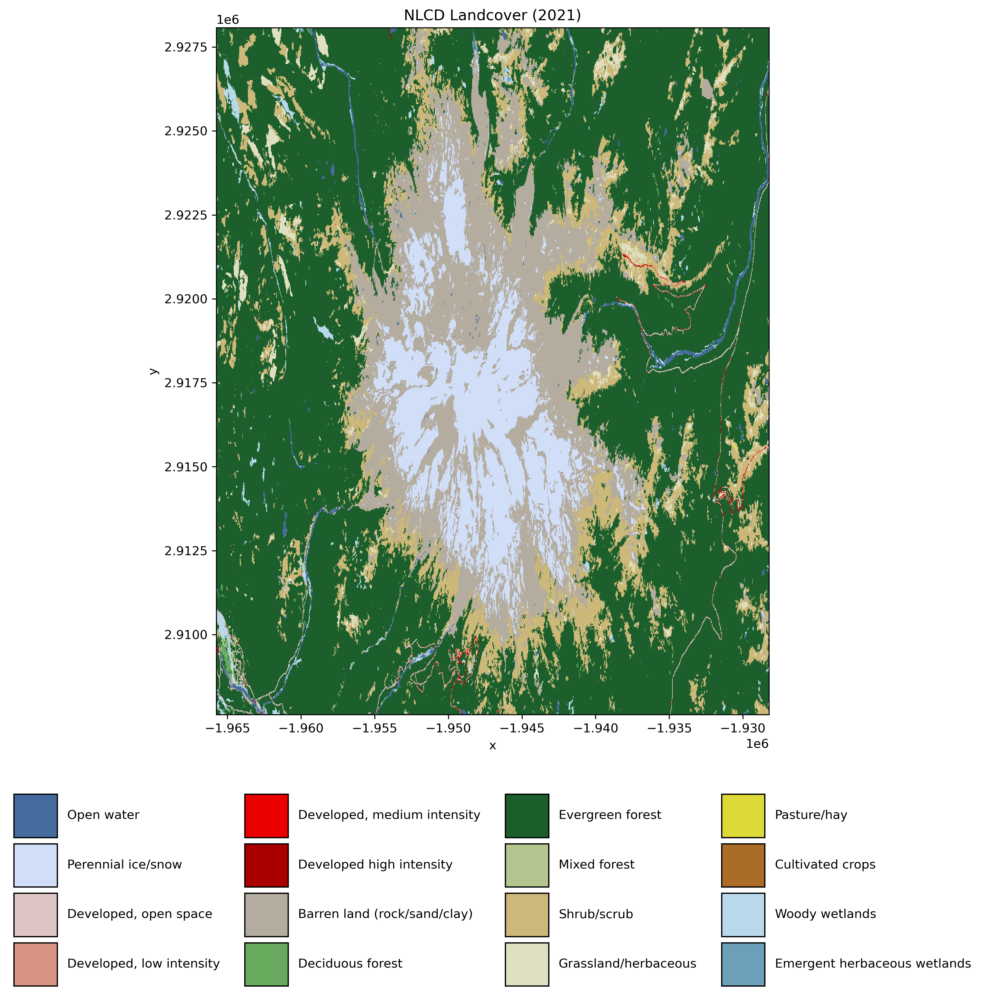
Sentinel-2#
s2 = easysnowdata.remote_sensing.Sentinel2(
bbox_input=bbox_gdf,
start_date="2024-05-31",
end_date="2024-07-07",
catalog_choice="planetarycomputer", # can also choose "earthsearch". one might be faster than the other depending on where you are running the code
resolution=80,
)
#s2.data
Data searched. Access the returned seach with the .search attribute.
Data retrieved. Access with the .data attribute. Data CRS: WGS 84 / UTM zone 10N.
Nodata values removed from the data. In doing so, all bands converted to float32. To turn this behavior off, set remove_nodata=False.
Data acquired after January 25th, 2022 harmonized to old baseline. To override this behavior, set harmonize_to_old=False.
Data scaled to float reflectance. To turn this behavior off, set scale_data=False.
Metadata retrieved. Access with the .metadata attribute.
Get Sentinel-2 RGB imagery#
s2.get_rgb()
#s2.rgb
#s2.rgba
#s2.rgb_percentile
#s2.rgb_clahe
RGB data retrieved.
Access with the following attributes:
.rgb for raw RGB,
.rgba for RGBA,
.rgb_percentile for percentile RGB,
.rgb_clahe for CLAHE RGB.
You can pass in percentile_kwargs and clahe_kwargs to adjust RGB calculations, check documentation for options.
/home/eric/miniconda3/envs/easysnowdata/lib/python3.10/site-packages/odc/geo/_rgba.py:56: RuntimeWarning: invalid value encountered in cast
return x.astype("uint8")
/home/eric/miniconda3/envs/easysnowdata/lib/python3.10/site-packages/odc/geo/_rgba.py:56: RuntimeWarning: invalid value encountered in cast
return x.astype("uint8")
f = s2.rgba.plot.imshow(col='time',col_wrap=5, robust=False)
for ax, time, in zip(f.axs.flat, s2.rgba.time.values):
local_time = pd.to_datetime(time).tz_localize('UTC').tz_convert('America/Los_Angeles')
ax.set_title(f'{local_time.strftime("%B %d, %Y")}\n{local_time.strftime("%I:%M%p")}')
ax.axis('off')
ax.set_aspect('equal')
f.fig.tight_layout()
f.fig.dpi = 300
f.fig.suptitle('Sentinel-2 RGBA', fontsize=16, y=1.02)
/home/eric/miniconda3/envs/easysnowdata/lib/python3.10/site-packages/rasterio/warp.py:344: NotGeoreferencedWarning: Dataset has no geotransform, gcps, or rpcs. The identity matrix will be returned.
_reproject(
Text(0.5, 1.02, 'Sentinel-2 RGBA')
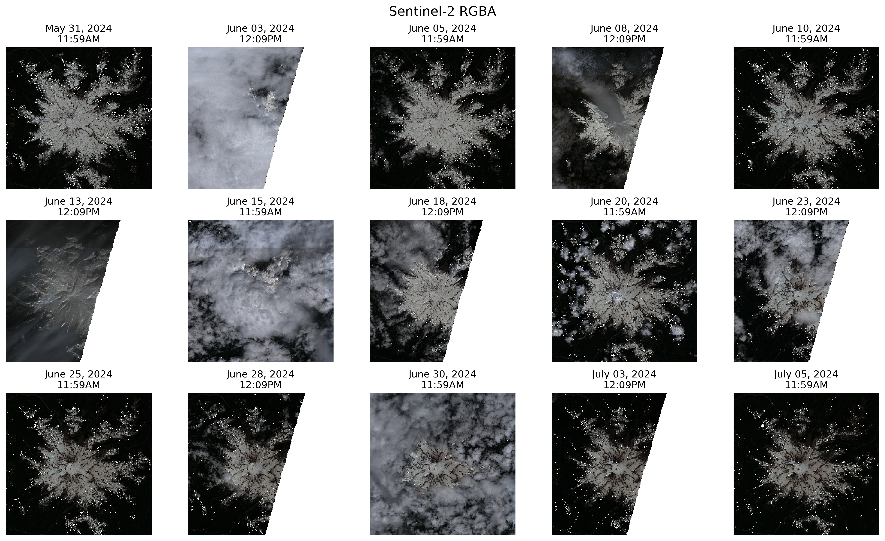
f = s2.rgb_clahe.plot.imshow(col='time',col_wrap=5, robust=False)
for ax, time, in zip(f.axs.flat, s2.rgb.time.values):
local_time = pd.to_datetime(time).tz_localize('UTC').tz_convert('America/Los_Angeles')
ax.set_title(f'{local_time.strftime("%B %d, %Y")}\n{local_time.strftime("%I:%M%p")}')
ax.axis('off')
ax.set_aspect('equal')
f.fig.tight_layout()
f.fig.dpi = 300
f.fig.suptitle('Sentinel-2 RGB w/ clahe equalization', fontsize=16, y=1.02)
Text(0.5, 1.02, 'Sentinel-2 RGB w/ clahe equalization')
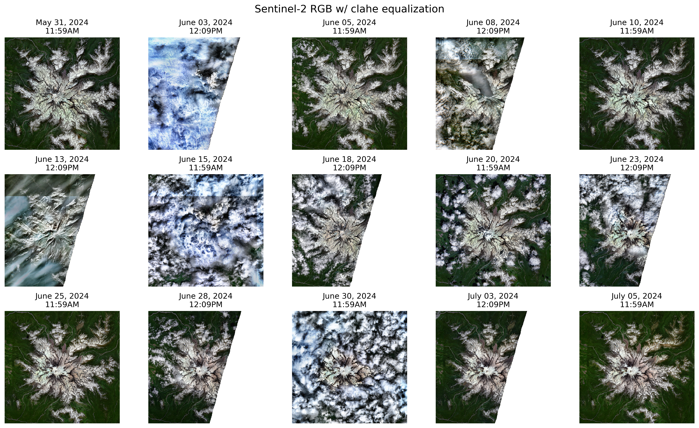
f,axs = plt.subplots(1,3,figsize=(12,7))
s2.rgba.isel(time=0).plot.imshow(ax=axs[0])
axs[0].set_title('RGBA')
s2.rgb_percentile.isel(time=0).plot.imshow(ax=axs[1])
axs[1].set_title('RGB w/ percentile stretch')
s2.rgb_clahe.isel(time=0).plot.imshow(ax=axs[2])
axs[2].set_title('RGB w/ clahe equalization')
for ax in axs:
ax.axis('off')
ax.set_aspect('equal')
f.tight_layout()
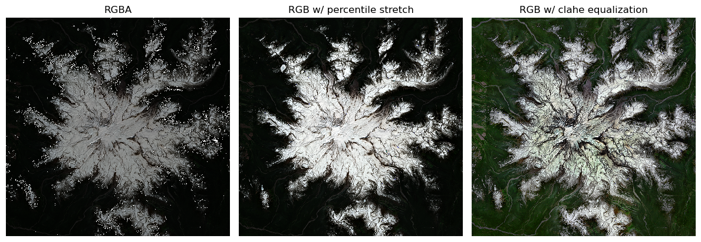
Get Sentinel-2 band indicies (NDSI, NDVI, NDWI, EVI, NDBI implemented)#
s2.get_ndvi()
#s2.ndvi
NDVI data calculated. Access with the .ndvi attribute.
f = s2.ndvi.plot.imshow(col='time',col_wrap=5)
for ax, time, in zip(f.axs.flat, s2.ndvi.time.values):
local_time = pd.to_datetime(time).tz_localize('UTC').tz_convert('America/Los_Angeles')
ax.set_title(f'{local_time.strftime("%B %d, %Y")}\n{local_time.strftime("%I:%M%p")}')
ax.axis('off')
ax.set_aspect('equal')
f.fig.suptitle('Sentinel-2 NDVI time series',fontsize=16,y=1.02)
Text(0.5, 1.02, 'Sentinel-2 NDVI time series')
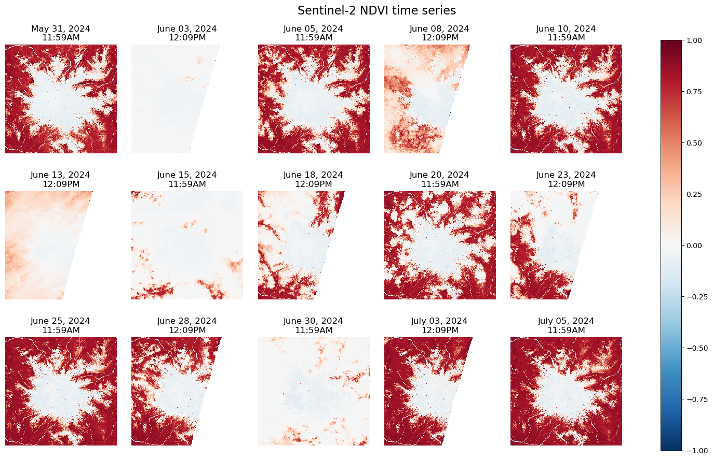
Clouds get in the way! Let’s check out the scene classification layer (SCL)#
#s2.data.scl
f, ax = s2.data.scl.attrs['example_plot'](s2.data.scl.sel(time='2024-05-31',method='nearest'))
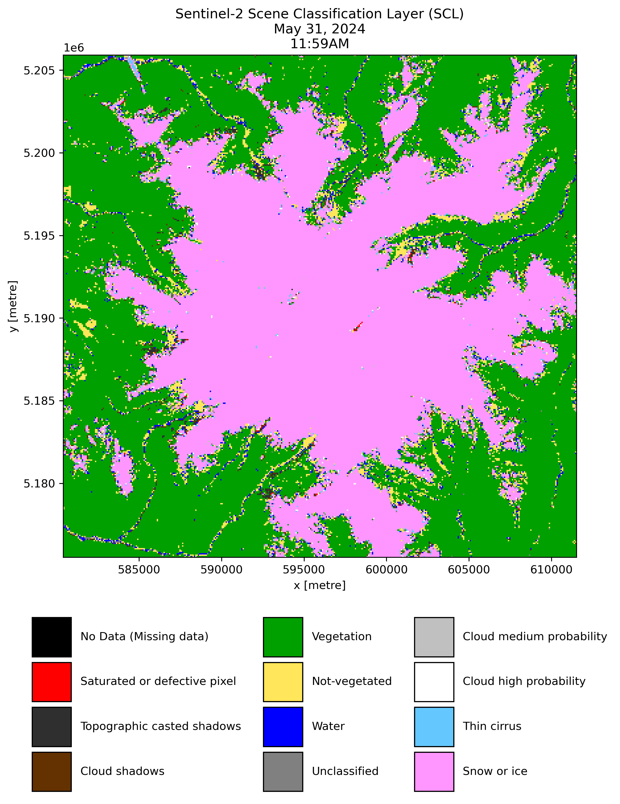
f, ax = s2.data.scl.attrs['example_plot'](s2.data.scl)
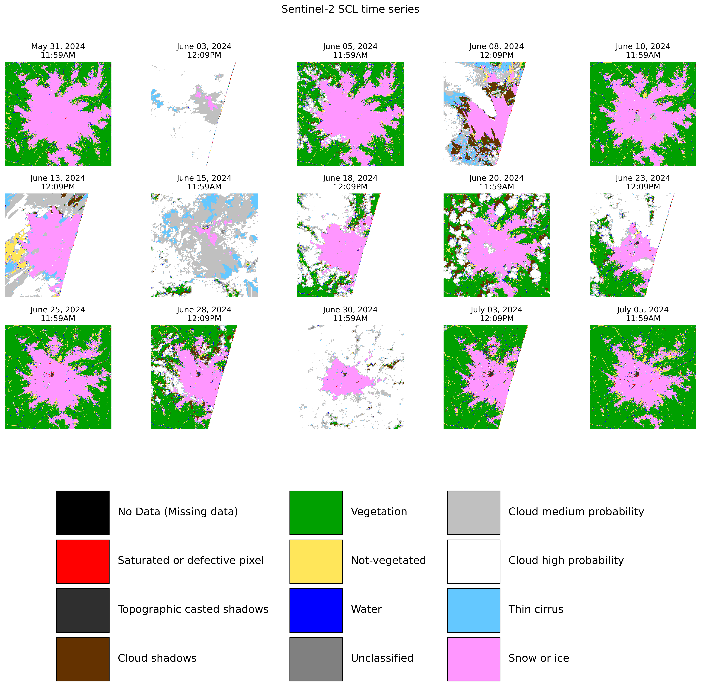
Let’s say we want to view cloud free images or calculate NDSI while mitigating clouds. We can do that by masking our data based on the SCL. Let’s mask the data we are not interested in. You can mask data by passing boolean values to .mask_data(). By default, no data, saturated pixels, topographic shadows, cloud shadows, cloud medium probability, cloud high probability, and thin cirrus are all removed.#
s2.mask_data()
Removed pixels with the following scene classification values:
No Data (Missing data)
Saturated or defective pixel
Topographic casted shadows
Cloud shadows
Cloud medium probability
Cloud high probability
Thin cirrus
# get rgb again, now with masked data
s2.get_rgb()
#s2.rgb_clahe
RGB data retrieved.
Access with the following attributes:
.rgb for raw RGB,
.rgba for RGBA,
.rgb_percentile for percentile RGB,
.rgb_clahe for CLAHE RGB.
You can pass in percentile_kwargs and clahe_kwargs to adjust RGB calculations, check documentation for options.
f = s2.rgb_clahe.plot.imshow(col='time',col_wrap=5, robust=True)
for ax, time, in zip(f.axs.flat, s2.rgb.time.values):
local_time = pd.to_datetime(time).tz_localize('UTC').tz_convert('America/Los_Angeles')
ax.set_title(f'{local_time.strftime("%B %d, %Y")}\n{local_time.strftime("%I:%M%p")}')
ax.axis('off')
ax.set_aspect('equal')
f.fig.tight_layout()
f.fig.dpi = 300
f.fig.suptitle('Sentinel-2 RGB w/ clahe equalization', fontsize=16, y=1.02)
Text(0.5, 1.02, 'Sentinel-2 RGB w/ clahe equalization')
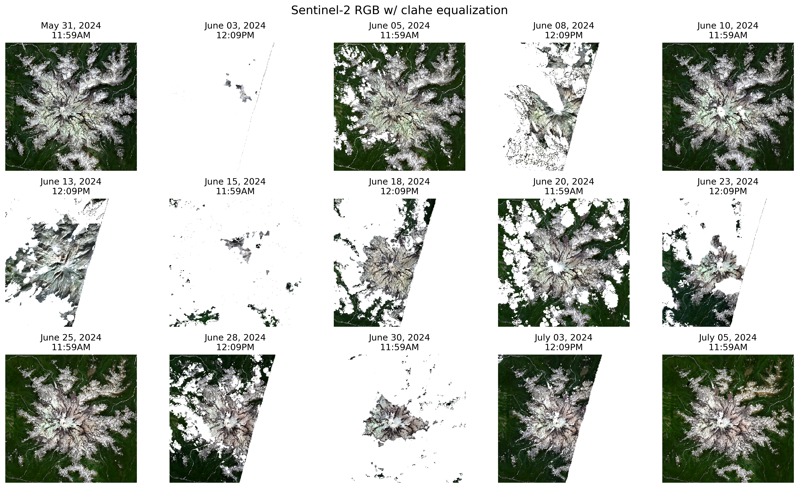
s2.get_ndsi()
#s2.ndsi
NDSI data calculated. Access with the .ndsi attribute.
f = s2.ndsi.plot.imshow(col='time',col_wrap=5)
for ax, time, in zip(f.axs.flat, s2.ndsi.time.values):
local_time = pd.to_datetime(time).tz_localize('UTC').tz_convert('America/Los_Angeles')
ax.set_title(f'{local_time.strftime("%B %d, %Y")}\n{local_time.strftime("%I:%M%p")}')
ax.axis('off')
ax.set_aspect('equal')
f.fig.dpi = 300
f.fig.suptitle('Sentinel-2 NDSI time series',fontsize=16,y=1.02)
Text(0.5, 1.02, 'Sentinel-2 NDSI time series')
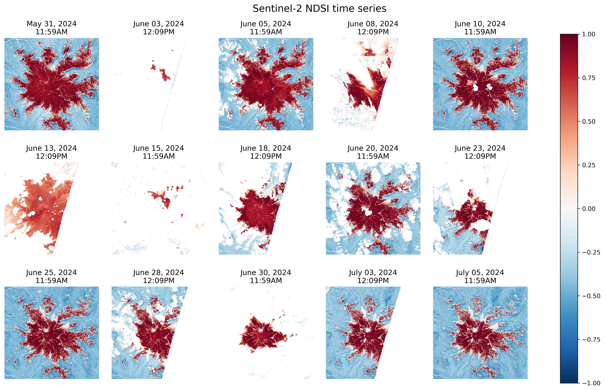
Sentinel-1#
s1 = easysnowdata.remote_sensing.Sentinel1(
bbox_input=bbox_gdf, start_date="2022-07-01", end_date="2022-07-31", resolution=80
)
#s1.data
Data searched. Access the returned seach with the .search attribute.
Data retrieved. Access with the .data attribute. Data CRS: WGS 84 / UTM zone 10N.
Metadata retrieved. Access with the .metadata attribute.
Falsely low scenes and border noise removed from the data.
Added relative orbit number and orbit state as coordinates to the data.
Linear power units converted to dB. Convert back to linear power units using the .db_to_linear() method.
f = s1.data['vv'].plot.imshow(col='time',col_wrap=5, vmin=-15, vmax=2, cmap='gray')
for ax, time, in zip(f.axs.flat, s1.data['vv'].time.values):
local_time = pd.to_datetime(time).tz_localize('UTC').tz_convert('America/Los_Angeles')
ax.set_title(f'{local_time.strftime("%B %d, %Y")}\n{local_time.strftime("%I:%M%p")}')
ax.axis('off')
ax.set_aspect('equal')
f.fig.suptitle('Sentinel-1 RTC backscatter time series',fontsize=16,y=1.02)
/home/eric/miniconda3/envs/easysnowdata/lib/python3.10/site-packages/rasterio/warp.py:387: NotGeoreferencedWarning: Dataset has no geotransform, gcps, or rpcs. The identity matrix will be returned.
dest = _reproject(
Text(0.5, 1.02, 'Sentinel-1 RTC backscatter time series')
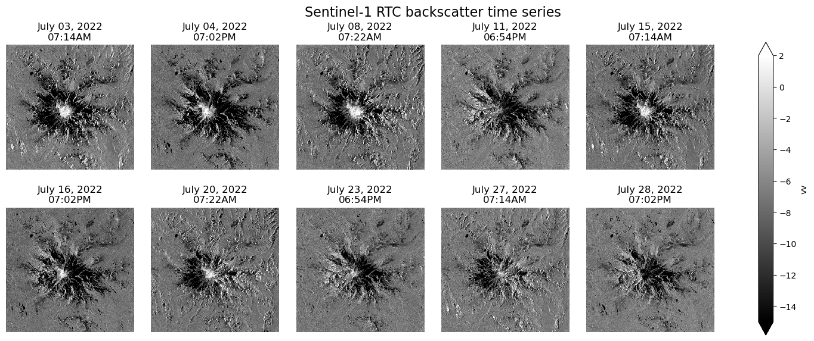
f, ax = plt.subplots(figsize=(10, 10))
s1.metadata.plot(
"sat:relative_orbit",
ax=ax,
edgecolor="black",
categorical=True,
legend=True,
alpha=0.2,
)
bbox_gdf.plot(ax=ax, edgecolor="black", facecolor="none")
ctx.add_basemap(ax, crs=s1.metadata.crs, source=ctx.providers.Esri.WorldImagery)
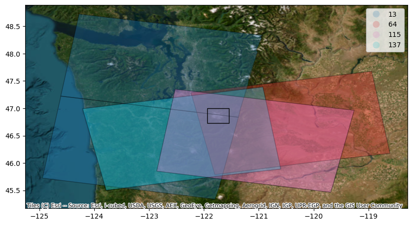
s1.get_local_incidence_angle()
Found 4 unique relative orbits: [64, 137, 13, 115]
Analyzing orbit projections to find the most common one...
Orbit 64 uses EPSG:32610
Orbit 137 uses EPSG:32610
Orbit 13 uses EPSG:32610
Orbit 115 uses EPSG:32610
Most common CRS: EPSG:32610 (used by 4 of 4 orbits)
Orbit 64 - Shape: (376, 380), NaN percentage: 0.0%
Successfully processed orbit 64
Orbit 137 - Shape: (376, 380), NaN percentage: 0.0%
Successfully processed orbit 137
Orbit 13 - Shape: (376, 380), NaN percentage: 0.0%
Successfully processed orbit 13
Orbit 115 - Shape: (376, 380), NaN percentage: 0.0%
Successfully processed orbit 115
Local incidence angle data reprojected to match main data grid using bilinear resampling.
Local incidence angle calculation complete. Access via the .local_incidence_angle_data attribute.
s1.local_incidence_angle_data.plot.imshow(col='sat:relative_orbit',vmin=0,vmax=90)
<xarray.plot.facetgrid.FacetGrid at 0x7f8d06cff310>
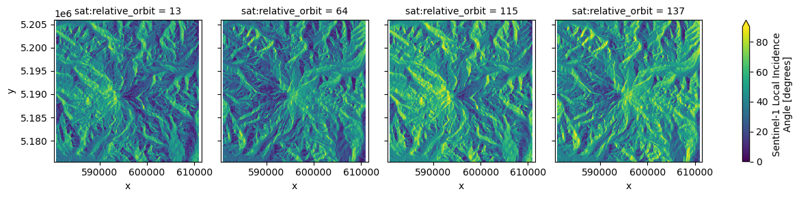
Harmonized Landsat Sentinel-2 v2.0#
# !CPL_VSIL_CURL_USE_HEAD=FALSE
# !GDAL_DISABLE_READDIR_ON_OPEN=YES
# !GDAL_HTTP_COOKIEJAR=/tmp/cookies.txt
# !GDAL_HTTP_COOKIEFILE=/tmp/cookies.txt
# from osgeo import gdal
# gdal.SetConfigOption('GDAL_HTTP_COOKIEFILE','~/cookies.txt')
# gdal.SetConfigOption('GDAL_HTTP_COOKIEJAR', '~/cookies.txt')
# gdal.SetConfigOption('GDAL_DISABLE_READDIR_ON_OPEN','EMPTY_DIR') #gdal.SetConfigOption('GDAL_DISABLE_READDIR_ON_OPEN','YES') EMPTY_DIR
# gdal.SetConfigOption('CPL_VSIL_CURL_ALLOWED_EXTENSIONS','TIF')
# gdal.SetConfigOption('GDAL_HTTP_UNSAFESSL', 'YES')
# gdal.SetConfigOption('GDAL_HTTP_NETRC','True')
hls = easysnowdata.remote_sensing.HLS(
bbox_input=bbox_gdf,
start_date="2022-07-01",
end_date="2022-07-31",
resolution=60,
)
#hls.data
Data searched. Access the returned seach with the .search_landsat or .search_sentinel attribute.
Data retrieved. Access with the .data attribute. Data CRS: WGS 84 / UTM zone 10N.
Nodata values removed from the data. In doing so, all bands converted to float32. To turn this behavior off, set remove_nodata=False.
Data scaled to reflectance. Access with the .data attribute. To turn this behavior off, set scale_data=False.
hls.get_rgb()
#hls.rgb
RGB data retrieved.
Access with the following attributes:
.rgb for raw RGB,
.rgba for RGBA,
.rgb_percentile for percentile RGB,
.rgb_clahe for CLAHE RGB.
You can pass in percentile_kwargs and clahe_kwargs to adjust RGB calculations, check documentation for options.
f,axs = plt.subplots(1,3,figsize=(12,7))
hls.rgba.isel(time=0).plot.imshow(ax=axs[0])
axs[0].set_title('RGBA')
hls.rgb_percentile.isel(time=0).plot.imshow(ax=axs[1])
axs[1].set_title('RGB w/ percentile stretch')
hls.rgb_clahe.isel(time=0).plot.imshow(ax=axs[2])
axs[2].set_title('RGB w/ clahe equalization')
for ax in axs:
ax.axis('off')
ax.set_aspect('equal')
f.tight_layout()
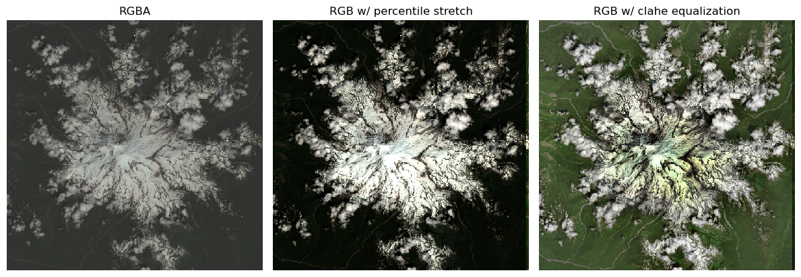
f = hls.rgb_percentile.plot.imshow(col='time',col_wrap=5,)
# for ax, time, platform in zip(f.axes.flat, hls.rgb.time.values, hls.rgb.platform.values): commented out because of HLS metadata issue that makes platform retrieval impossible, that is being fixed: https://forum.earthdata.nasa.gov/viewtopic.php?p=20578#p20578
# local_time = pd.to_datetime(time).tz_localize('UTC').tz_convert('America/Los_Angeles')
# ax.set_title(f'{local_time.strftime("%B %d, %Y")}\n{local_time.strftime("%I:%M%p")}\n{platform}')
# ax.axis('off')
# ax.set_aspect('equal')
for ax, time in zip(f.axes.flat, hls.rgb_percentile.time.values):
local_time = pd.to_datetime(time).tz_localize('UTC').tz_convert('America/Los_Angeles')
ax.set_title(f'{local_time.strftime("%B %d, %Y")}\n{local_time.strftime("%I:%M%p")}')
ax.axis('off')
ax.set_aspect('equal')
f.fig.subplots_adjust(hspace=0.3)
f.fig.suptitle('Harmonized Landsat Sentinel-2 (HLS) time series\nw/ percentile stretch',fontsize=16,y=1.04)
Text(0.5, 1.04, 'Harmonized Landsat Sentinel-2 (HLS) time series\nw/ percentile stretch')
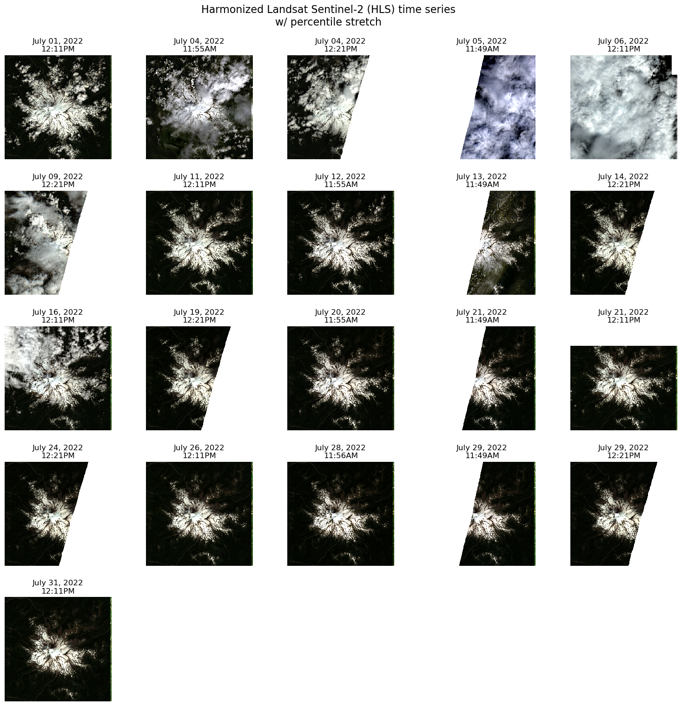
MODIS/Terra Snow Cover: MOD10A1 (Daily), MOD10A2 (8-Day), MOD10A1F (Daily cloud-gap-filled)#
mod10a1 = easysnowdata.remote_sensing.MODIS_snow(bbox_gdf, start_date='2022-07-01', end_date='2022-07-31', data_product='MOD10A1')
Data retrieved. Access with the .data attribute.
mod10a1.data
<xarray.Dataset> Size: 4MB
Dimensions: (y: 66, x: 167, time: 31)
Coordinates:
* y (y) float64 528B 5.226e+06 ... 5.196e+06
* x (x) float64 1kB -9.294e+06 ... -9.217...
spatial_ref int32 4B 0
* time (time) datetime64[ns] 248B 2022-07-01...
Data variables:
hdf (time, y, x) float32 1MB dask.array<chunksize=(1, 66, 167), meta=np.ndarray>
NDSI (time, y, x) int16 683kB dask.array<chunksize=(1, 66, 167), meta=np.ndarray>
orbit_pnt (time, y, x) uint8 342kB dask.array<chunksize=(1, 66, 167), meta=np.ndarray>
granule_pnt (time, y, x) uint8 342kB dask.array<chunksize=(1, 66, 167), meta=np.ndarray>
NDSI_Snow_Cover (time, y, x) uint8 342kB dask.array<chunksize=(1, 66, 167), meta=np.ndarray>
Snow_Albedo_Daily_Tile (time, y, x) uint8 342kB dask.array<chunksize=(1, 66, 167), meta=np.ndarray>
NDSI_Snow_Cover_Basic_QA (time, y, x) uint8 342kB dask.array<chunksize=(1, 66, 167), meta=np.ndarray>
NDSI_Snow_Cover_Algorithm_Flags_QA (time, y, x) uint8 342kB dask.array<chunksize=(1, 66, 167), meta=np.ndarray>f= mod10a1.data['NDSI_Snow_Cover'].rio.reproject_match(hls.data, resampling=rio.enums.Resampling.nearest).where(lambda x: x <= 100).plot.imshow(
col="time", col_wrap=6, vmin=0, vmax=100, cmap='Blues'
)
for ax, time, in zip(f.axs.flat, mod10a1.data.time.values):
ax.set_title(f'{pd.to_datetime(time).strftime("%B %d, %Y")}')
ax.axis('off')
ax.set_aspect('equal')
f.fig.suptitle('MODIS MOD10A1 daily NDSI snow cover',fontsize=16,y=1.02)
Text(0.5, 1.02, 'MODIS MOD10A1 daily NDSI snow cover')
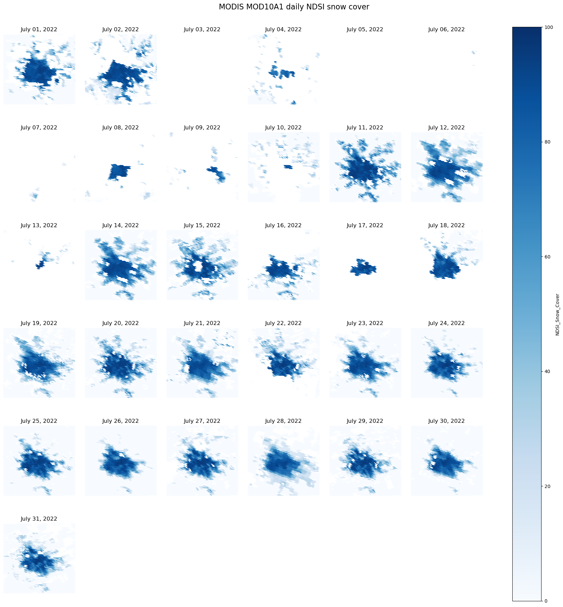
mod10a2 = easysnowdata.remote_sensing.MODIS_snow(bbox_gdf, start_date='2022-07-01', end_date='2022-07-31', data_product='MOD10A2')
Data retrieved. Access with the .data attribute.
mod10a2.get_binary_snow()
Binary snow map calculated. Access with the .binary_snow attribute.
mod10a2.binary_snow.rio.crs
CRS.from_wkt('PROJCS["unnamed",GEOGCS["Unknown datum based upon the custom spheroid",DATUM["Not specified (based on custom spheroid)",SPHEROID["Custom spheroid",6371007.181,0]],PRIMEM["Greenwich",0],UNIT["degree",0.0174532925199433,AUTHORITY["EPSG","9122"]]],PROJECTION["Sinusoidal"],PARAMETER["longitude_of_center",0],PARAMETER["false_easting",0],PARAMETER["false_northing",0],UNIT["Meter",1],AXIS["Easting",EAST],AXIS["Northing",NORTH]]')
f= mod10a2.binary_snow.rio.reproject_match(hls.data, resampling=rio.enums.Resampling.nearest).plot.imshow(
col="time", col_wrap=6, cmap='Blues'
)
for ax, time, in zip(f.axs.flat, mod10a2.binary_snow.time.values):
ax.set_title(f'{pd.to_datetime(time).strftime("%B %d, %Y")}')
ax.axis('off')
ax.set_aspect('equal')
f.fig.suptitle('MODIS MOD10A2 8-day snow cover',fontsize=16,y=1.04)
Text(0.5, 1.04, 'MODIS MOD10A2 8-day snow cover')
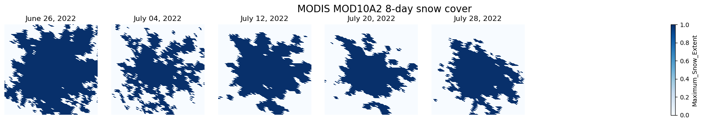
mod10a1f = easysnowdata.remote_sensing.MODIS_snow(bbox_gdf, start_date='2022-07-01', end_date='2022-07-31', data_product='MOD10A1F')
#NDSI>10 is snow
Granules found: 31
Getting 31 granules, approx download size: 0.03 GB
File MOD10A1F.A2022182.h09v04.061.2022184060608.hdf already downloaded
File MOD10A1F.A2022183.h09v04.061.2022185043746.hdf already downloaded
File MOD10A1F.A2022184.h09v04.061.2022186055009.hdf already downloaded
File MOD10A1F.A2022185.h09v04.061.2022187234249.hdf already downloaded
File MOD10A1F.A2022186.h09v04.061.2022188071311.hdf already downloaded
File MOD10A1F.A2022187.h09v04.061.2022189044231.hdf already downloaded
File MOD10A1F.A2022188.h09v04.061.2022190054810.hdf already downloaded
File MOD10A1F.A2022189.h09v04.061.2022191062150.hdf already downloaded
File MOD10A1F.A2022190.h09v04.061.2022192033749.hdf already downloaded
File MOD10A1F.A2022191.h09v04.061.2022193061917.hdf already downloaded
File MOD10A1F.A2022192.h09v04.061.2022194154602.hdf already downloaded
File MOD10A1F.A2022193.h09v04.061.2022195213955.hdf already downloaded
File MOD10A1F.A2022194.h09v04.061.2022196065818.hdf already downloaded
File MOD10A1F.A2022195.h09v04.061.2022197050019.hdf already downloaded
File MOD10A1F.A2022196.h09v04.061.2022198043034.hdf already downloaded
File MOD10A1F.A2022197.h09v04.061.2022199044930.hdf already downloaded
File MOD10A1F.A2022198.h09v04.061.2022201021512.hdf already downloaded
File MOD10A1F.A2022199.h09v04.061.2022201063018.hdf already downloaded
File MOD10A1F.A2022200.h09v04.061.2022202070115.hdf already downloaded
File MOD10A1F.A2022202.h09v04.061.2022204074301.hdf already downloaded
File MOD10A1F.A2022201.h09v04.061.2022203064434.hdf already downloaded
File MOD10A1F.A2022204.h09v04.061.2022206074037.hdf already downloaded
File MOD10A1F.A2022205.h09v04.061.2022207080913.hdf already downloaded
File MOD10A1F.A2022206.h09v04.061.2022208051744.hdf already downloaded
File MOD10A1F.A2022207.h09v04.061.2022209055609.hdf already downloaded
File MOD10A1F.A2022203.h09v04.061.2022205045351.hdf already downloaded
File MOD10A1F.A2022208.h09v04.061.2022210065049.hdf already downloaded
File MOD10A1F.A2022209.h09v04.061.2022215090148.hdf already downloaded
File MOD10A1F.A2022210.h09v04.061.2022215090828.hdf already downloaded
File MOD10A1F.A2022211.h09v04.061.2022215091517.hdf already downloaded
File MOD10A1F.A2022212.h09v04.061.2022215092248.hdf already downloaded
Data retrieved. Access with the .data attribute.
f= mod10a1f.data.rio.reproject_match(hls.data, resampling=rio.enums.Resampling.nearest).where(lambda x: x <= 100).plot.imshow(
col="time", col_wrap=6, vmin=0, vmax=100, cmap='Blues'
)
for ax, time, in zip(f.axs.flat, mod10a1f.data.time.values):
ax.set_title(f'{pd.to_datetime(time).strftime("%B %d, %Y")}')
ax.axis('off')
ax.set_aspect('equal')
f.fig.suptitle('MODIS MOD10A1F cloud-gap-filled NDSI snow cover',fontsize=16,y=1.02)
Text(0.5, 1.02, 'MODIS MOD10A1F cloud-gap-filled NDSI snow cover')
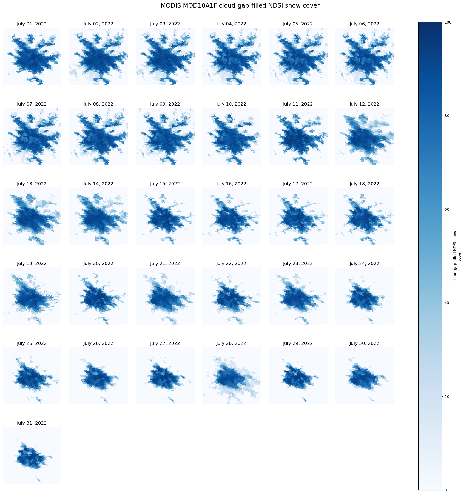
PALSAR-2#
# list(bbox_gdf.total_bounds)
# !pip install --upgrade xee
# import xee
# !earthengine authenticate --quiet
# import ee
# ee.Initialize(opt_url="https://earthengine-highvolume.googleapis.com")
# bbox_ee = ee.Geometry.Rectangle(153.0, -43.0, 154.0, -42.0)
# bbox_ee = ee.Geometry.Rectangle(*list(bbox_gdf.total_bounds))
# bbox_ee = ee.Geometry.BBox(*list(bbox_gdf.total_bounds))
# bbox_ee.Polygon()
# ic.first().select(0).projection()
# ic = ee.ImageCollection("JAXA/ALOS/PALSAR-2/Level2_2/ScanSAR").filterDate(
# "2022-07-01", "2022-07-31"
# )
# ds = xr.open_dataset(
# ic,
# geometry=bbox_ee,
# projection=ic.first().select(0).projection(),
# crs="EPSG:4326",
# engine="ee",
# scale=0.01,
# )
# ds
# ds["HH"].isel(time=1).plot()
# def dn_to_db(dn):
# db = 10 * np.log10(dn**2) - 83
# return db
# ds["HH"].map_blocks(dn_to_db)
# ds["HH"].isel(time=0)
# ds.time.values[0:10]